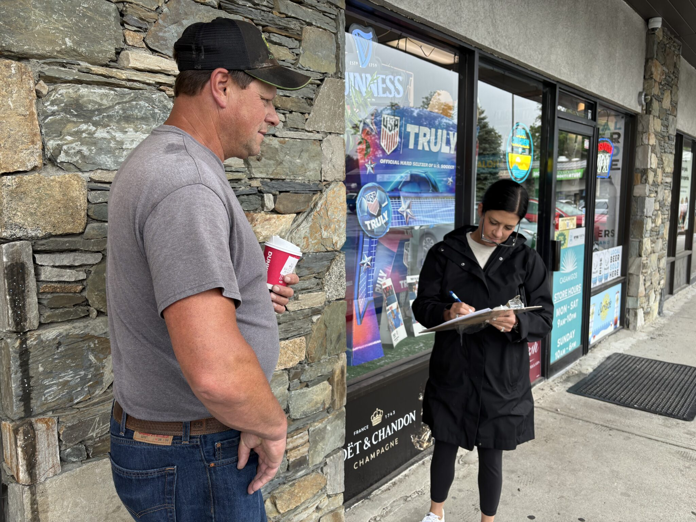
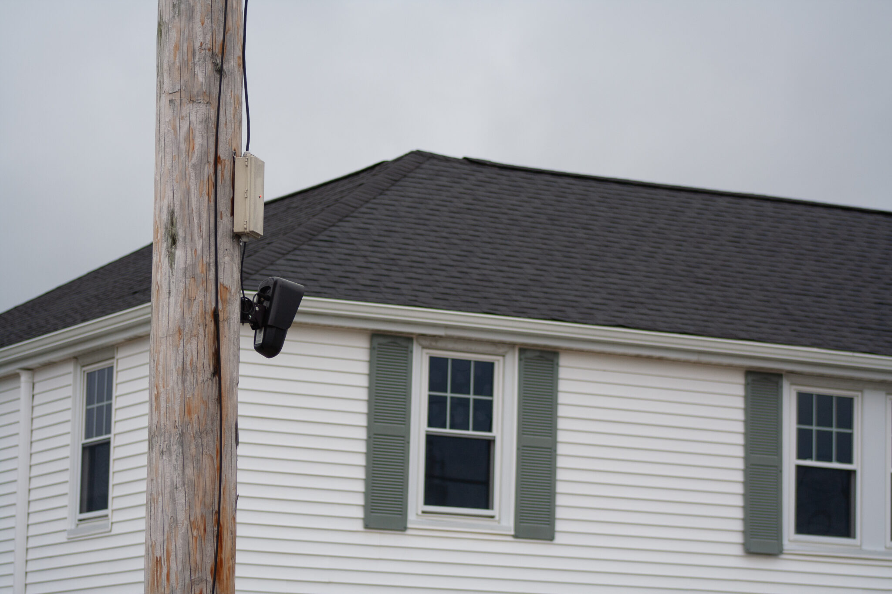
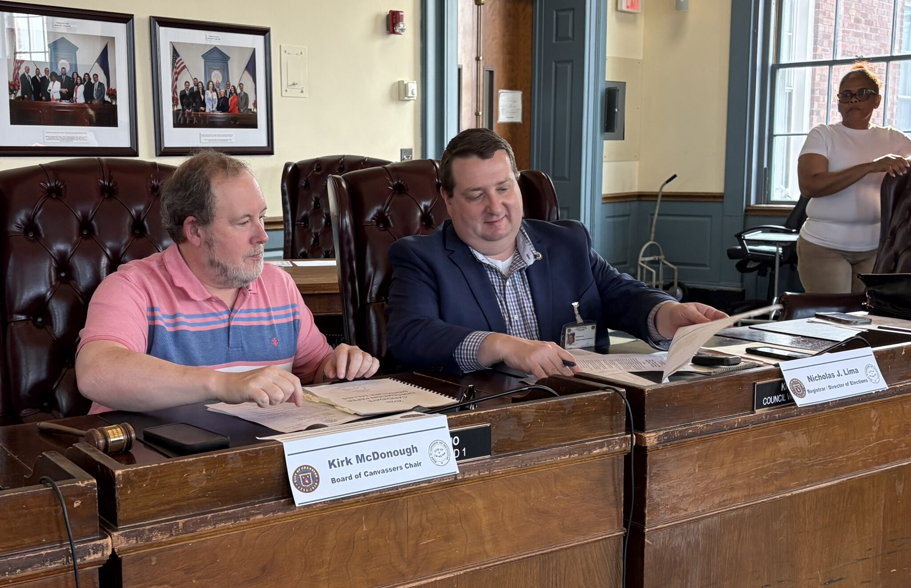
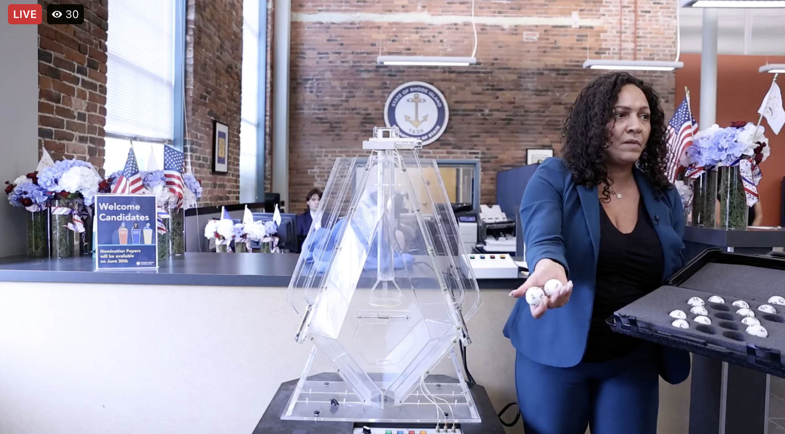

The Diamondback
Assistant managing editor | April 2026 - Present
Rhode Island Current
Intern | June 2026 - August 2026
Education
University of Maryland: Philip Merrill College of Journalism
I am a sophomore journalism and environmental science and policy major at the University of Maryland. I’m from Tiverton, Rhode Island, and interested in environmental and political reporting.

Independents running for governor in ‘do-or-die’ race to collect signatures
As municipalities across Rhode Island resist Flock cameras, McKee orders review
As RI elections officials race to certify signatures by deadline, Arizona might offer a better way
McKee’s lucky day at ballot placement lottery Four Democrats paint their views for the ‘entrepreneurial’ lieutenant governor’s office